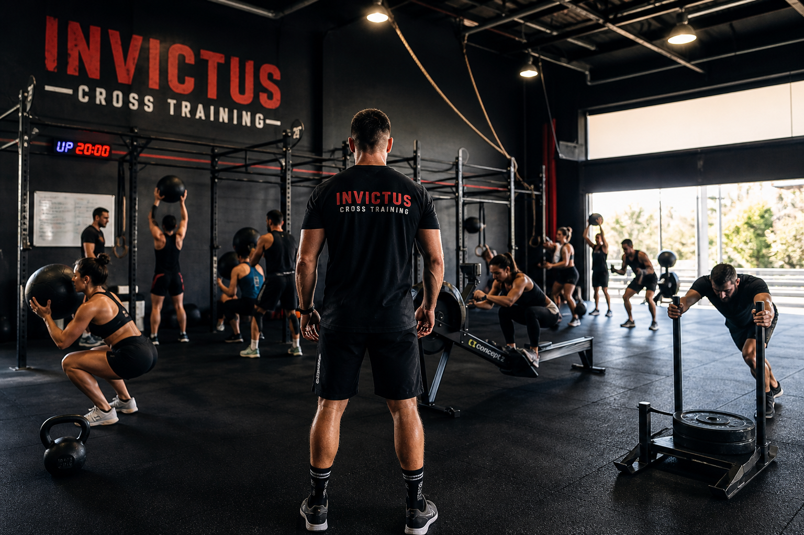
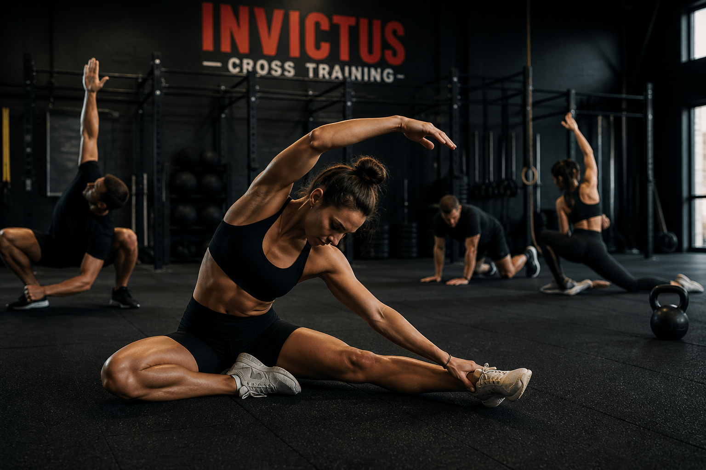
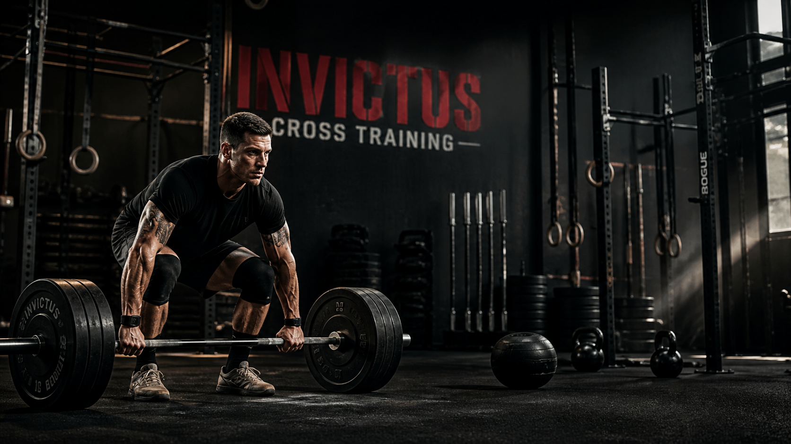

Equilibrio e precisione
Lavoro a corpo libero per stabilizzare i muscoli e creare sinergia tra i vari distretti.
Tutte le migliori squadre agonistiche associano allenamenti funzionali alla propria disciplina specifica per aumentare le performance.
INVICTUS Cross Training porta al globale condizionamento fisico del corpo, ricercando l’equilibrio di un sistema in cui ogni componente interagisce armonicamente con le altre.

Ogni partecipante viene coinvolto da subito nella famiglia Invictus, rispettando progressioni reali, senza esasperare i passaggi.
Le difficoltà vengono affrontate in modo progressivo, nello sport come nella vita, aumentando autostima, spirito di squadra e risultati.
Gli step
Rispettiamo una scaletta progressiva per raggiungere gli obiettivi senza spaventare l’atleta davanti a difficoltà insormontabili.
Lavoro a corpo libero per stabilizzare i muscoli e creare sinergia tra i vari distretti.
Movimenti fluidi e ampi, tecnica con strumenti dedicati e prevenzione degli infortuni.
Velocità, agilità, movimenti articolati e sviluppo della capacità cardiovascolare.
Esercizi multiarticolari che reclutano più gruppi muscolari e portano il cuore a lavorare ad alto ritmo.

La base
È meglio focalizzarsi sul movimento e imparare a gestire il proprio peso corporeo, invece di utilizzare male tanta attrezzatura.
Precisione, propriocezione, coordinazione, spinte, trazioni e rinforzo muscolare a corpo libero creano una solida base atletica.
Solo dopo si inseriscono kettlebell, palle mediche, giubbotti zavorrati e strumenti utili ad aumentare difficoltà, prestazioni e risultati.
Sessioni
Periodi di allenamento base per costruire controllo e adattamento.
Sessioni ad alta intensità in stile Tabata o Guerrilla Cardio.
Workout metabolici per migliorare capacità cardiovascolare e resistenza.
Allenamenti completi con esercizi di pesistica, ginnastica e cardio.
Programmi individuali
Per migliorare più rapidamente le proprie abilità, i più preparati integrano l’allenamento in strutture dedicate con attrezzatura da PowerLifting, progressioni ed esercizi specifici.
Gli allenamenti sono studiati per garantire varietà di modalità, durata e carico, indipendentemente dal numero di lezioni svolte e dai giorni scelti.
L’obiettivo dei più ambiziosi è una preparazione fisica generale ad alto livello, attraverso l’alternanza di pesistica, ginnastica, cardio e lavori monostrutturali.
